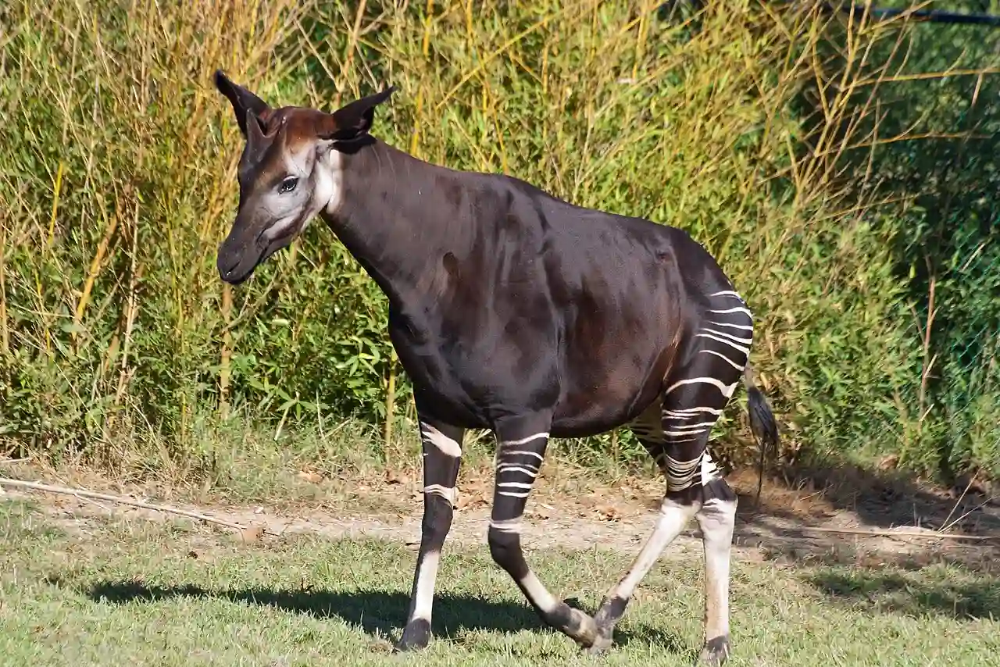

Data
Area: 2,345,409 km²
Population: 112,000,000
Capital: Kinshasa
Languages: French, Lingala, Kikongo
Currency: Congolese Franc
Time Zone: UTC+2
Calling Code: +243
Internet TLD: .cd
Weather

Temperature: 10 °C
Conditions: Partly Cloudy
Wind: 5 km/h
Wind Chill: N/A